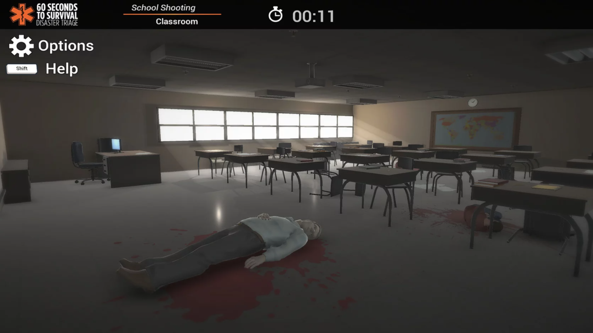

Jumpstart Triage was a game I helped develop during my sophomore year internship with Massachusetts Digital Games Institute. Together we worked alongside Yale School of Medicine to develop the mass casualty response simulation that eventually became Jumpstart Triage. The simulation was then contracted out to local law enforcement and first responders.
Shown above, is the triage wheel that appears when the player comes in contact with an injured person. The player is then instructed to follow the proper triage guidelines to test and conclude what condition the subject is in. Once the subjects condition is assigned, a triage rating is applied to them. A colored triage tag will appear above them and the player is instructed to move on.
My major roles on the project were level design and C# scripting. I also worked with the projects lighting designer to rework the games first few levels in order to achieve better framerates during gameplay.
The schools library and main entrance area were causing performance issues. I worked alongside the teams lighting designer, and together we were able to narrow the problem down to the map size of the baked lighting textures. We ended up re-baking all of the levels light maps. this resulted in much smoother performance and made the game look better too.
The office building level works much the same as the school. The player navigates around searching for injured office workers before applying a triage rating to them. As a team we decided that a multitude of different levels included in the simulation would need to reflect real life locations where mass casualty situations have and could occur.
The player begins at the front entrance lobby of the building. The challenge of performing triage in real life is finding everyone who has been injured as quickly as possible. Because of this, we decided to make Jumpstart Triage timed. Depending on how fast the player is able to find and score each injured individual in a level, their score will increase or decrease.